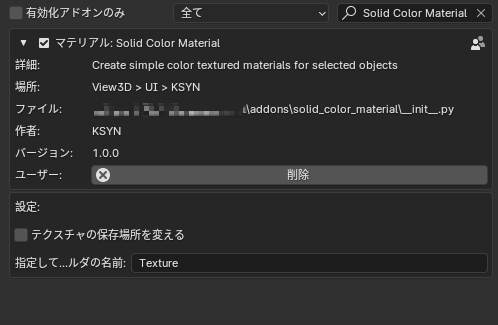
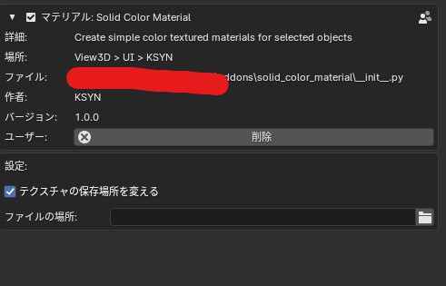

Solid Color Materialの様々な機能
■機能■ 本アドオンでは 選択したオブジェクトに対して、指定の色のマテリアルが「テクスチャ」として追加されます。
通常のマテリアル設定だとUNITYやクリスタでは色味がガンマ値補正で違ったりするのですがこのアドオンでは直にイメージの色のテクスチャを割り当ててるだけですのでブレンダー上の色でも問題なくクリスタやUNITYで表示されます。
※余談 本アドオンとは関係ありませんが、 ガンマ値の計算は https://en.wikipedia.org/wiki/SRGB のウィキペディアが詳しいです。 とりあえずブレンダー上のマテリアルの色（Principled (プリンシプル) のベースカラー）が他のソフトでは互換性が無いと思っていて下さい。
■用途■ 「とりあえず、UV展開するまでもなく画像の色指定だけしたい」 「一部のメッシュの色を指定して決めたい」 などの用途にとても便利です。
■非常に軽量■ テクスチャは1Pixelですので、軽量になっております。
■履歴機能■ また、履歴機能もパネルも別途追加してますので、パネルの方からテクスチャやマテリアル（同名で既に使用してる色がブレンダーにあればそれが再利用されます。）
基本的な使い方

オブジェクトモードだと選択下オブジェクトの前メッシュにマテリアルが適応されます。 エディットモードですと、選択したメッシュに指定した色のマテリアルが適応されます。
カラーの履歴機能（フォルダを参照）
{kind=link}
この機能では別のパネルに過去に使用したカラーが表示されます。 クリックしていだければ過去の色を新しく作ることなく 再利用できます。
過去に使用したカラーテクスチャ（1Pixelの）はデフォルトでは ブレンダーファイルのあるフォルダのTextureのフォルダに格納されます。
アドオンの設定画面で、テクスチャの保存先や保存フォルダ名は変更できます。
詳しくは アドオンの設定 参照。
アドオンの設定
デフォルのテクスチャの保存先の名前を変更できます。
どのブレンダーアドオンでも同じフォルダを使いたい場合は 「テクスチャの保存先を変える」をクリックして 任意の保存先を指定して下さい。
更新履歴
2024-05-10 Solid_color_material_v1_0_0.zipリリース